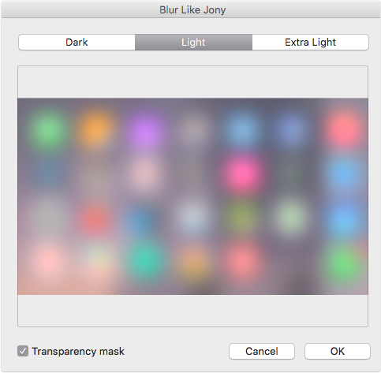
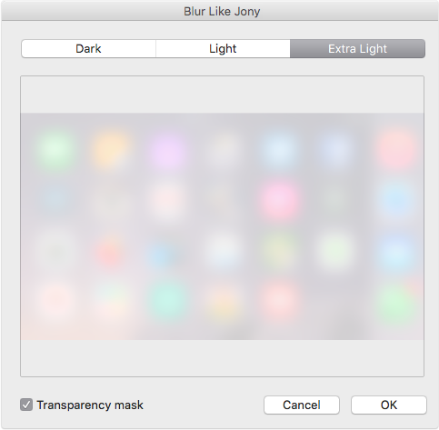
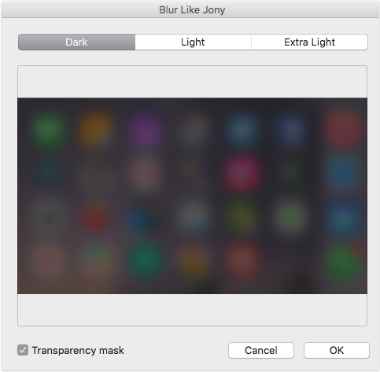

Blur Like Jony is Photoshop filter plug-in that makes the blur in the same way as Apple does in the current iOS.
So, the plug-in has three modes, such as in UIVisualEffectView: Dark, Light, Extra Light
   If you like this plug-in, check also
Browser Preview and HTML Block or Dock Puppet
Contact mail hello@bg-d.net